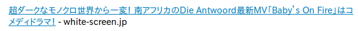

Mailing List Archive
|
tlug.jp
|
[Date Prev][Date Next][Thread Prev][Thread Next][Date Index][Thread Index]
[Lingo] モノクロ
- Date: Mon, 22 Oct 2012 08:52:59 -0700
- From: s smith <sjs@example.com>
- Subject: [Lingo] モノクロ
- User-agent: Mozilla/5.0 (X11; Linux x86_64; rv:16.0) Gecko/20121010 Thunderbird/16.0.1
|
This a link to a very strange south african video on
youtube that popped up on yahoo.jp
this weekend. The characters look like they might be albino.
What I'm wondering is if モノクロ which the
dictionaries translate as monochrome is also
slang for albino. Also I know 変 means strange among other things, but I very rarely see it used that way. So does 一変 in this case mean #1 strange/very strange?? Thanks Steve S.  |
- Follow-Ups:
- [Lingo] モノクロ
- From: Stephen J. Turnbull
- [Lingo] モノクロ
- Next by Date: [Lingo] モノクロ
- Next by thread: [Lingo] モノクロ
- Index(es):
| Home Page | Mailing List | Linux and Japan | TLUG Members | Links |